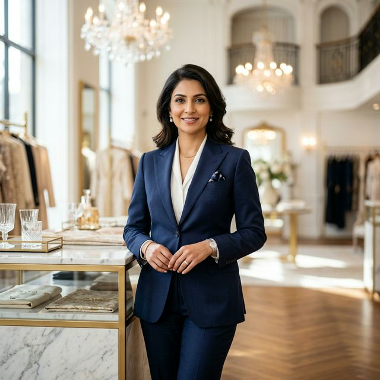
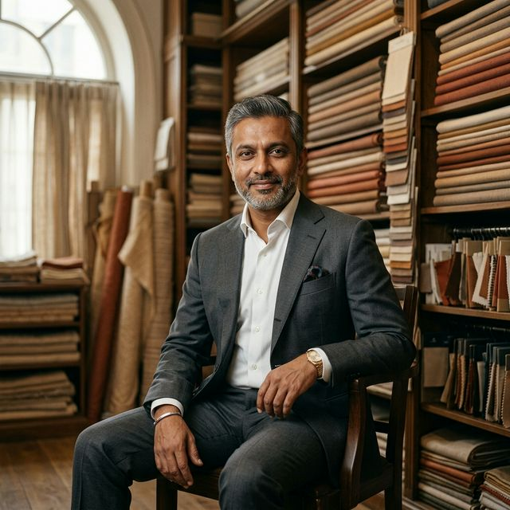

Akram Khan
Founder & CEO
With over 30 years of experience in luxury trade, Akram leads the company with visionary strategy and deep industry connections. His stewardship turned an intimate atelier into a sprawling luxury empire.
The Leadership
Meet the visionary executives who steer Farruch Exports with expertise, discretion, and an unparalleled dedication to haute couture excellence.
Founder & CEO
With over 30 years of experience in luxury trade, Akram leads the company with visionary strategy and deep industry connections. His stewardship turned an intimate atelier into a sprawling luxury empire.

Chief Operations Officer
Noor oversees global operations across our five international bureaus, ensuring seamless haute couture logistics, artisan scheduling, and exceptional service delivery across all global markets.

Director of Sourcing
With extensive experience in luxury product authentication and textile genesis, Soumudeep leads our global sourcing program, ensuring only the rarest silks and ethically mined crystals enter Farruch Tower.

Director of Client Relations
Sophia ensures our couture clients receive personalized, discreet attention. Operating out of the New York salon, she coordinates bespoke commissions from sketch to red carpet execution.
Connect with our client relations team to discuss bespoke sourcing, custom embroidery, and exclusive logistics.
Contact the bureau